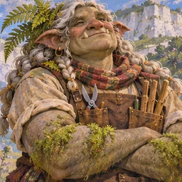
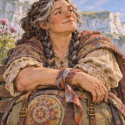

Тролль, гарпия, горгулья и другие разумные обитатели подземелий хотят жить без обязательной роли противника. Они пригласили вас устроить вместе с ними Широкий Порог: дом с влажными комнатами, солнечными террасами, местом для громких песен и правом закрыть дверь. Скоро в удачный дом попросятся новые соседи, а гильдия искателей приключений захочет проверить, умеют ли жители безопасно встречать гостей.

Если партия изменила план
Перед чтением вступления сверьте место героев, присутствующих людей и предметы с итогом прошлого вечера. Если условия встречи отпали, сыграйте последствия там, где находится партия. Событие по расписанию может произойти за кадром. Герои узнают о нём от тех, кто был на месте.
Вечер 7. Если часть жителей закрывает свой вход
Пусть жители отметят на плане, до какой двери приглашены гости. Проведите пробу на открытом участке. Наутро отдельно спросите жильцов закрытой галереи, годится ли им временный быт; их отказ от гостей продолжает действовать.
Группа отказалась от задания
Управлять убежищем не берёмся. Перенесём вещи одной семьи туда, куда она сама укажет. Пишем на пороге часы, в которые жильцы согласны принимать. Семья ночует отдельно. Остальным придётся самим согласовать соседство; общего управляющего нет.
Игроки раскрыли тайну раньше
Сравним записи трёх ночлегов и обещания жильцов на одно утро. Предложим поменяться сменами для проверки. Доступные свидетельства — Три пробных ночлега, Три обещания на одно утро. Жильцам нужны разные условия, а расписание ставит Кеда сразу на три работы. Для этого конфликта не нужен виноватый. Разносим очереди работ так, чтобы Кед сам выбрал одну. Усталость и несовместимые обязанности объясняют наблюдения. Жильцы могут развести расписания без поиска предателя.
Партия уступила поле
Козы удержали солнечную полку, пробный ночлег на ней сорвался. Выделяем одну сухую ночь тем, кто согласен на пробу. Выбираем одну сухую комнату для ночи и оставляем остальные закрытыми. Право открыть дом завтра остаётся у жителей.
За десять минут до первой игры
- Откройте первый вечер, прочитайте правду мира и участников. Остальные вечера — планы, их исход решают игроки.
- Выберите пакет под фактическое число игроков. Первые три героя — готовое ядро; остальные добавляются по порядку. Возраст игрока не определяет героя.
- Согласуйте темы, длительность и сигнал паузы. Передайте игрокам только players.html; раздатки выдавайте по отдельности после указанного открытия.
- Откройте Мастерскую проекта, создайте личный черновик и импортируйте выбранный JSON через загрузку пакета. Проверьте состав и начало в предпросмотре. Запуск кампании подтверждает ведущий штатным действием.
- Откройте иллюстрацию завязки отдельно. Портреты героев входят в файл для игроков, портреты встречных — в книгу ведущего. Тактические схемы доступны в разделе карт.
Формат и темы
8 вечеров; 150 минут: 10 минут начала и повтора, сцены 35 + 40 + 40 минут, перерыв 10 минут, завершение 15 минут.
В Меловой гряде старые каменоломни служат складами, мастерскими и жильём. Один просторный выработанный склон принадлежит товариществу первых жителей Широкого Порога; они предлагают героям равные места среди устроителей. Камень здесь обычный, перегородки новые, никакое древнее устройство не требует спасения. Существа говорят, работают, спорят о полотенцах и любят разные условия. В их прошлом могли быть приключенческие стычки, но никому не нужно доказывать доброту происхождением или терпеть вторжение ради крыши.
Тактильное чудо, бытовая изобретательность, добродушный юмор без насмешки над телом; реальные неудобства и переговоры без скрытого злодея.
- Право на личную территорию и гостеприимство
- Доступность как конкретное устройство пространства
- Разница между помощью и распоряжением чужой жизнью
- Усталость, добровольная работа и изменение обещаний
- Разные тела, общие дела и несовпадающие привычки
Границы
- 12+: без натуралистичных ран, сексуального материала, пыток и насмешек над телесными потребностями; прежние схватки существуют только как краткий фон по согласию стола.
- Не приравнивайте фантастический народ к реальной этнической, медицинской или иной группе. Жители представляют себя, а не всеобщую аллегорию.
- До начала согласуйте комфорт с темами вторжения в дом, шума и вынужденного ухода. Любой участник может сказать «пауза», письменно убрать деталь или пропустить сцену без объяснений.
- Срыв пробного дня означает закрытие участка, переработку обещаний или перенос посещения, а не смерть жителей. Насилие не требуется для доступа к сюжету.
Люди за столом
- В начале каждого вечера меняйте первого говорящего. Возраст игрока не определяет лидера, класс или право последнего слова; взрослый и подросток получают одинаковое право предложить, отказаться и изменить решение.
- Каждый сначала выбирает действие устно или запиской; можно передать очередь. Обсуждение начинается после круга предложений. Ведущий спрашивает разрешения, прежде чем кто-то отвечает за другого героя.
- Рисуйте комнаты прямоугольниками на бумаге. После решения подписывайте одно физическое изменение, одного согласившегося жителя и оставшийся неудобный компромисс. Это заметки ведущего, а не новая автоматическая игровая механика.
- При 3–4 игроках группа последовательно посещает участки; при 5–8 работает парами или тройками. Сначала соберите намерения всех, затем разрешите действия по одному короткому обмену на группу; соединяйте группы у общего чертежа в конце каждой сцены.
- Для каждого решения задайте равноправные вопросы двух глубин: «Где сделать проход?» и «Кто сможет им пользоваться без разрешения соседа?». Можно ответить рисунком, предметами, короткой репликой или подробным рассуждением.
- Восемь героев имеют равные права устроителей. Первые трое образуют достаточную группу; задачи героев с отсутствующими игроками свободно берут остальные. Ни один класс, заклинание, возраст или личная история не открывает обязательный путь.
- Отсутствующий герой помогает с обычными делами за кадром и не принимает необратимых решений. По возвращении игрок получает три публичных изменения дома и сам выбирает, к какому делу присоединиться.
- Специалист советует только о своей области; он не командует жильцами. Рискованные действия и проверки разрешает ведущий по обычным правилам. Будущие последствия в книге являются подготовкой, не уже случившимися фактами.
Масштабирование группы
3 игрока
Дара, Ильмар и Сана достаточны для всей истории. Каждый вечер меняйте роли собеседника, наблюдателя и чертёжника; посещайте участки вместе. Житель может держать инструмент по просьбе, но решение остаётся у игроков.
4 игрока
Добавьте Эсту или любой другой свободный лист. Две пары проверяют потребности и проходы, затем меняются находками. Четвёртая роль следит за отзывом согласия, а не получает власть над остальными.
5 игроков
Работают пара и тройка; пятый игрок сам выбирает участок. В каждом общем решении дайте каждому собственное предложение, затем объединяйте совместимые. Дополнительного обязательного задания нет.
6 игроков
Три пары одновременно занимаются условиями комнат, путями и разговором с жильцами. После сцены поменяйте задачи. Ведущий разрешает по одному действию каждой пары, не отыгрывает одну ветку до конца.
7 игроков
Две пары и тройка; в тройке отдельно выбирают действие, последствие и способ его показать на плане. Эти роли переходят по кругу и не дают права говорить за других. На общем чертеже каждый отмечает собственный вклад.
8 игроков
Четыре пары: комнаты, пути, согласие, испытание. На каждую пару один короткий обмен с ведущим за круг, затем смена пары первой очереди. Перед финальным выбором восемь независимых предложений устно или запиской; возраст не создаёт старшего совета.
Первое чтение вслух
Меловая гряда в конце лета белеет, как свежевыстиранное полотно: известняковые осыпи на склонах, луговые тропы в клевере, а между ними — старые каменоломни, которые давно перестали давать камень и стали складами, мастерскими и домами. Одна из них, самая просторная, выходит к лугу широкой аркой. Внизу у тропы ещё торчит выцветший столбик со старой гильдейской пометкой «подземелье»: когда-то сюда ходили искатели приключений с факелами и списками чудовищ. Теперь на самой арке висит новая доска, и буквы на ней вырезаны старательно, хоть и неровно: «Оружие можно оставить при себе. Право отказать во входе тоже». Под доской собрались хозяева. Широкоплечая тролль с мягким мхом на предплечьях держит кадку с папоротником бережно, будто ребёнка. Рыжая гарпия прижимает к груди свёрнутый ковёр и постукивает когтем по дощечке, отбивая ритм. В неглубоком тазу на полозьях сидит прозрачная жительница цвета чайного стекла и читает, а внутри неё медленно проплывают буквы. На солнечном уступе над входом неподвижно греется горгулья, наверху между балками поблёскивают катушки паучихи, а маленький кобольд в синей рубахе таскает щиты и повторяет: «Успею». Из зала пахнет сырой землёй, мелом и свежей стружкой. Вперёд выходит минотавр в длинном домашнем жилете, с мягкими колпачками на рогах и деревянной линейкой в руке. «Мы можем построить себе комнаты, — говорит рогатый картограф. — Камень есть, руки есть, даже щиты есть. Но пока каждый удобный проход идёт через чью-нибудь спальню. Поможете придумать дом, в котором не придётся побеждать соседа?»
Правда мира · только ведущему
- Скрытого чудовища-предателя нет. Первые жители искренне хотят дома; их упрямство, усталость и невыполненные обещания остаются обычными человеческими по смыслу недостатками.
- Главный практический вывод: совместимы не одинаковые условия, а соседство разных условий с независимыми путями и возможностью отказаться. Его независимо показывают опыт с влажной тканью, рассказ о пробных ночлегах и обмер боковой площадки; ни один путь не требует другого.
- Мохнатому троллю Руте нужна влажная почва, но не постоянная темнота. Горгулье Арку важен солнечный прогрев, но он готов делиться террасой по времени. Требования конкретных жителей нельзя переносить на целый народ.
- Каменщик Кед взял больше работы, чем успевает. Он скрывает усталость из стыда; его чертежи верны, а признание позволяет уменьшить объём работ. Он не саботажник и не тайный хозяин дома.
- Инспектор Веста может снять Широкий Порог с гильдейского списка опасных подземелий и согласовать гостевой маршрут. Она не владеет домом и не может навязать ему смотрителя. Ей нужны наблюдаемые безопасные проходы, а не признание жителей послушными.
- Ткачиха Ланга просит комнату из-за шума в своём нынешнем жилье. Её просьба расширяет вопрос: является ли Порог домом для определённого вида существ или местом с определёнными правилами соседства. Правильного обязательного ответа нет.
- Финальный открытый день, добровольная эвакуационная прогулка или закрытая учебная тревога являются альтернативами, выбранными игроками. Реальной катастрофы, принудительной войны и заранее гарантированного успеха нет; ведущий проверяет обещания по сыгранным сценам.
Восемь вечеров
- 1. Не комната для всех — Услышать потребности первых жителей и устроить один обратимый пробный ночлег с отдельным общим проходом.
- 2. Два шага мимо чужой двери — Выбрать и проверить самостоятельные пути между разными условиями, сохранив право жильцов на закрытые комнаты.
- 3. Дом слышит соседей — Разделить звук, доступ и труд так, чтобы хороший дом не требовал чьего-то постоянного молчания или работы.
- 4. Кто ещё просится домой — Ответить новой соседке и определить пределы внешнего посещения, сохранив самостоятельность уже живущих здесь.
- 5. Обещания на настоящем плане — Сделать понятные сигналы и хотя бы один проверенный маршрут, который работает при разных телесных потребностях и закрытой личной двери.
- 6. День отказов — Испытать изменение согласия, место ожидания и честный размер приглашения; окончательно выбрать формат финального дня.
- 7. Порог открыт настолько, насколько обещано — Провести выбранное игроками событие вживую и выяснить, какие обещания дом выполняет при изменении условий и согласия.
- 8. Жить здесь завтра — Разобрать последствия испытания, выбрать устойчивый размер дома и сыграть личные эпилоги без отмены неудач или обязательного большого открытия.
Места
Меловая гряда
Белые известняковые склоны, луговые тропы в клевере и выработанные каменоломни, где теперь хранят сено, держат мастерские и живут. Жители долины умеют обращаться с камнем лучше, чем с соседями, и по-разному представляют себе хорошее соседство: одни строят заборы, другие ставят у двери вторую скамью. На ветру здесь всегда немного пахнет мелом.
Широкий Порог
Входной зал бывшей каменоломни, высокий и гулкий, с широким столом для планов посередине и тремя выходами в боковые галереи. Арку над входом легко заметить с луговой тропы, на ней висит доска с правилами дома. Стол исчерчен мелом и уставлен образцами: подушками, кадками, кусками ткани. Здесь собираются первые устроители.
Тихая галерея
Сухой каменный коридор с неглубокими нишами, вырубленными когда-то под инструменты. Шаги здесь слышны далеко, а случайное слово возвращается эхом из дальнего конца. Зато плотные полотняные пологи превращают ниши в уютные уголки, и в одном из них уже стоят подписанные коробки с карандашами.
Папоротниковая комната
Нижняя комната с грунтовыми кадками, мелким жёлобом для воды и площадкой сухого камня у входа. Влажная земля пахнет лесом после дождя, на стенах блестят капли, а папоротники тянутся к узкой щели под потолком, откуда по утрам падает полоса солнца.
Солнечная полка
Широкий уступ над входом, где полдня солнце лежит на плоских плитах и прогревает их так, что к вечеру камень ещё тёплый. Отсюда видна вся долина до самого луга. Рядом можно поставить навес, не закрывая обзора, а у края стоят пустые хозяйственные сундуки.
Верхний ход
Высокая галерея с балками, верёвочными поручнями и несколькими уровнями, где когда-то поднимали камень на блоках. По полу проходят люди, а над ними удобно закреплять ткань и плетёные площадки. Между балками поблёскивают нити и катушки, и воздух здесь суше и теплее, чем внизу.
Мастерская короткой смены
Столы с пробковыми образцами, шнурами, клиньями и ручными инструментами; в углу сложены широкие щиты для перегородок. Свободная стена покрыта прямоугольниками будущих комнат, пока нарисованными углём, и стрелками, которые не раз стирали и рисовали заново. Здесь пахнет стружкой, клеем и остывшим чаем.
Гостевое крыльцо
Неглубокий навес перед аркой, две скамьи разной высоты и ящик для писем с крышкой от дождя. Отсюда хорошо виден вход, но не жилые ниши: так задумано нарочно. Гость может посидеть, подождать ответа или уйти, никого не потревожив.
Двор пологого склона
Пологий путь от луга к входу, выложенный плитами, между которыми пробивается подорожник. У стены сложены деревянные щиты; повозка и пешеход пока с трудом расходятся на одном повороте, и на углу видны свежие царапины от колёс и чьих-то плеч.
Двор чаш
Открытый дворик с низким водосборником и переносными чашами разного размера. Вода поступает обычным самотёком из ключа и тихо журчит в желобах; краны и пробки видны с дорожки, чтобы любой мог их найти. На мокрых плитах блестит солнце, в воздухе пахнет свежей водой и мокрым мелом.
Боковая площадка
Плоский травянистый участок вдоль склона, который соединяет верхний уступ с нижней дорожкой длинным обходом. Отсюда видна тропа до самого луга, а ветер приносит запах клевера. Здесь удобно остановиться и передохнуть, никого не загораживая, хотя пока вдоль стены стоят чьи-то ящики.
Рута Папоротник

68 лет. Широкоплечая тролль с мягким мхом на предплечьях, карманами для садовых черенков и коротким клетчатым шарфом. Выращивает папоротники и медленно подбирает слова. Предпочитает отвечать, закончив небольшое дело руками.
Место: Папоротниковая комната
Намерение
Влажную комнату со светлым краем и возможность не становиться общей садовницей по умолчанию.
Собственные знания
- Во время первого ночлега её кадка увлажнила соседний ковёр; отодвинутая доска сохранила сухую полоску.
- Мокрая ткань рядом с почвой остаётся влажной дольше ткани за невысокой перегородкой.
- Арк однажды держал её папоротник на краю солнечного уступа, и растению там понравилось.
Секрет или личное убеждение
Ей нравится утреннее солнце, хотя знакомые привыкли предлагать ей самый тёмный угол. Она ещё не поправила их, потому что не хочет показаться требовательной.
Граница и раскрытие
Не разрешает трогать мох на теле или переставлять кадки без вопроса; согласие на один опыт не означает согласия на все будущие.
Если спросить о хорошем утре или предложить сравнить свет и влагу, прямо рассказывает о любви к солнцу и показывает следы опыта с тканью.
Век Прямая Черта
44 лет. Минотавр в длинном домашнем жилете; на концах рогов мягкие колпачки, в руке деревянная линейка с широкими делениями. Рисует карты троп и складывает чужие карандаши в подписанные коробки. Очень любит порядок и иногда начинает наводить его без приглашения.
Место: Тихая галерея
Намерение
Тихую нишу, в которую никто не проходит ради короткой дороги.
Собственные знания
- Пробные спальные места трижды меняли местами; лучше всего спалось при разных условиях и отдельной дорожке.
- В узком повороте его плечи задевают обе стойки; широкий обход измерить ещё проще, чем расширять камень.
- Войлочный полог делает шаги тише, но не отменяет право на закрытую нишу.
Секрет или личное убеждение
Свой первый чертёж он назвал общим, хотя сделал его один. Теперь понимает, что короткий проход на плане пересекает его же желанную спальню, и смущён ошибкой.
Граница и раскрытие
Не хочет, чтобы его размер обсуждали как препятствие вместо обсуждения неудобной двери.
Когда герои просят вместе пройти план ногами, признаёт авторство первого чертежа и показывает записи трёх пробных ночлегов без проверки.
Глея Прозрачная

31 лет. Разумная желейная жительница цвета чайного стекла сидит в неглубокой чаше на широких полозьях; слова выводит плавающими внутри буквами. Переписывает стихи крупным почерком и любит спорить о рифме. Разговаривает письменно; участники не должны угадывать смысл по её форме.
Место: Двор чаш
Намерение
Гладкий влажный путь между своей комнатой и общим столом, который не обязывает просить кого-то нести её.
Собственные знания
- Сухой шершавый камень раздражает её поверхность; гладкие съёмные полосы и вода в чашах решают эту местную задачу.
- Две её чаши помещаются на боковой площадке рядом, не закрывая сухую дорожку.
- При переноске её стихотворные буквы перемешиваются, поэтому она просит предупреждать о движении.
Секрет или личное убеждение
Ей удобнее потратить больше времени на самостоятельный обход, чем каждый раз принимать помощь. Она благодарила носильщиков, но это не было просьбой продолжать.
Граница и раскрытие
Нельзя зачерпывать, переносить или украшать её без отдельного согласия. Молчание при смене букв не означает согласия.
При предложении выбрать помощь или самостоятельный путь пишет, что выбирает второй; затем сама показывает чаши и гладкие полосы.
Лиска Первая Нота

24 лет. Гарпия с рыжими перьями и поясом из тканых лент; носит лёгкую дощечку, на которой отбивает ритм когтем. Любит петь громко и переставляет мелодию, если забывает слова. Считает хороший шум признаком дружбы, пока её не попросят уточнить.
Место: Солнечная полка
Намерение
Место для настоящего пения, а не обещание всё время говорить шёпотом.
Собственные знания
- Повернувшись к долине на Солнечной полке, она слышит меньше обратного эха.
- Плотная ткань у входа поглощает часть звука, а щель возле пола всё равно пропускает шаги.
- Арк любит её короткую утреннюю песню, но не обещал слушать ежедневные репетиции.
Секрет или личное убеждение
Однажды она обиделась на просьбу Века о тишине и с тех пор поёт далеко от дома, опасаясь новой ссоры. Она не спрашивала его, готов ли он обсуждать время и направление звука.
Граница и раскрытие
Не соглашается на правило вечного молчания и не разрешает проверять голос внезапным испугом.
Если спросить, когда ей удобно петь и что она готова пробовать, рассказывает о неудачном разговоре с Веком и предлагает сравнить два направления голоса.
Таль Восьмая Петля
56 лет. Разумная паучиха размером с кресло, в жилете со множеством катушек. Её глаза отражают маленькие яркие точки, а голос похож на шелест плотной бумаги. Плетёт прочные пологи и любит без предупреждения улучшать собственные узоры. Её рабочая сеть бывает красивой и неудобной для высокого гостя.
Место: Верхний ход
Намерение
Жилую площадку наверху и ясную границу между своей паутиной, поручнем и общим проходом.
Собственные знания
- Узел с двумя свободными концами обозначает её съёмное крепление, а круглая бирка — место, которое можно трогать.
- Нижний настил и верхняя площадка могут иметь разные входы при одном общем поручне.
- Её цветные бирки различимы на ощупь, если добавить к ним разные формы.
Секрет или личное убеждение
Она сняла собственный красивый полог, когда поняла, что он мешает Арку пройти. Ей жаль работы, но она не хочет возвращать его ценой чужого неудобства.
Граница и раскрытие
Ни срезать жилую сеть, ни вешать на неё чужие вещи нельзя без приглашения; её тело не является лестницей.
Показывая крепления или отвечая на вопрос о снятом пологе, рассказывает о своей ошибке и предлагает переделку при участии будущих пользователей.
Арк Тёплый Камень
120 лет. Горгулья с округлыми крыльями и блестящими от долгого сидения ладонями. На коленях лежит деревянная коробка с солнечными часами. Любит греться, наблюдать облака и давать слишком длинные названия камням. Бывает приветливым, но устаёт от постоянных разговоров.
Место: Солнечная полка
Намерение
Тёплое место для отдыха и возможность оставаться неподвижным без приглашения стать достопримечательностью.
Собственные знания
- Тень от съёмного навеса движется по краю полки, оставляя солнечную и прохладную полосы одновременно.
- Тяжёлые сундуки занимают наиболее удобное место разворота; убрать их можно без каменных работ.
- На боковой площадке есть ровный участок для отдыха по дороге вниз.
Секрет или личное убеждение
Иногда Арк рад показать часы гостям, но боится, что одно согласие превратится в постоянное дежурство. Ему легче отказаться сразу, чем объяснять перемену настроения.
Граница и раскрытие
Неподвижность не означает разрешения садиться на него, рисовать на нём или показывать его посетителям.
Если герои предлагают ограниченное приглашение с правом отмены, он объясняет страх постоянного дежурства и показывает свою схему теней.
Кед Короткая Смена

32 лет. Кобольд в пыльной синей рубахе и мягкой рабочей шапке. Карманные часы постоянно переворачивает циферблатом внутрь. Аккуратно делает простые перегородки и охотно говорит «успею». Просит проверять его изделия руками, а не верить красивому обещанию.
Место: Мастерская короткой смены
Намерение
Быть полезным соседом, у которого остаётся вечер без чужих срочных поручений.
Собственные знания
- В запасе шесть широких щитов и два рулона плотной ткани; каждый щит можно переставить обычными креплениями.
- Одну перегородку за смену можно установить спокойно, а несколько требуют добровольных помощников и новых сроков.
- Невысокие бортики позволяют разнести влажный край и сухую дорожку, если проверить уклон чашей воды.
Секрет или личное убеждение
Пообещал три разные перегородки к одному утру и уже знает, что не успеет. Он не испортил материалы; ему стыдно первым предложить уменьшить работу.
Граница и раскрытие
Не работает без отдыха ради доказательства преданности дому; герои могут попросить, но не распоряжаться его сменой.
При совместном чтении доски поручений или вопросе о следующем свободном вечере признаёт три обещания и предлагает выбрать одну работу на сегодня.
Веста Медный Знак

38 лет. Человек в дорожном плаще с простой медной застёжкой. Несёт папку, мягкую измерительную верёвку и собственную складную скамью. Проверяет гостевые пути для гильдии искателей приключений. Сначала читает вывеску у входа и спрашивает, куда ей разрешено пройти.
Место: Гостевое крыльцо
Намерение
Убедиться на наблюдаемом примере, что гость может войти, остановить посещение и выйти, не нарушая чужой комнаты.
Собственные знания
- Гильдия может убрать место из своего списка опасных целей после проверки согласованного маршрута.
- Владение жильём не переходит гильдии из-за такой проверки; личные комнаты можно оставить за её пределами.
- Принимаются открытый приём, добровольная прогулка выхода или закрытое учение с приглашённым наблюдателем.
Секрет или личное убеждение
Она сама когда-то назвала жилой вход «зачищенным маршрутом» и получила справедливое возражение. Теперь боится прозвучать покровительственно, но не всегда замечает привычные слова.
Граница и раскрытие
Не подписывает неувиденное и не требует личных историй жителей. Она вправе описать ограниченный результат, не объявляя весь дом опасным.
Если герои уточняют её полномочия или поправляют неудачное слово, признаёт прежнюю ошибку и показывает точный лист условий без спора о власти.
Ланга Длинная Нить

46 лет. Человеческая ткачиха с круглой дорожной сумкой и шерстяной лентой, завязанной на запястье. Ставит вещи аккуратно, но занимает скамью сразу целиком. Живёт рядом с шумным красильным двором и ищет более тихую комнату. Приносит образцы плотной ткани, не предлагая их в обмен на обязательное принятие.
Место: Гостевое крыльцо
Намерение
Испытать один тихий вечер в Пороге и получить честный ответ о возможности поселиться.
Собственные знания
- В красильном дворе рабочие начинают стучать до рассвета; тихие часы в другом месте помогли бы ей спать.
- Её ткацкая рама разбирается на три части и помещается в небольшой нише без станка общего пользования.
- На гостевом крыльце дождь не мочит левую скамью; там удобно подождать письменного ответа.
Секрет или личное убеждение
Она представляет убежище местом без всякого шума; это личное ожидание, которое она ещё не проверила на репетиции Лиски. Она хочет понять условия, а не переделать дом под себя.
Граница и раскрытие
Согласна на пробный визит и отказ в заселении, но не на обсуждение своей жизни как публичного примера для гостей.
Если спросить, чего она ожидает от обычного утра, прямо описывает мечту о полной тишине и готова проверить конкретные часы вместо обещания идеального дома.
Минн Две Стрелки

17 лет. Полурослик с длинным шарфом, сумкой меловых табличек и привычкой чертить стрелки в воздухе перед рассказом. Добровольно помогает встречать гостей по одной короткой смене. Любит точные маршруты и иногда слишком быстро произносит указания.
Место: Широкий Порог
Намерение
Чтобы незнакомый человек смог найти выход без постоянного сопровождающего, а его собственная помощь оставалась добровольной.
Собственные знания
- Одинаковые стрелки на входе различаются только цветом, а на ощупь не различаются совсем.
- Гость может передать просьбу остановиться на крыльце, не объясняя её всем в зале.
- На боковой площадке хватает места для ожидающих, если не ставить там ящики.
Секрет или личное убеждение
На пробной прогулке он сам перепутал две одинаковые стрелки и обошёл двор лишний раз. Он боится, что после признания его сочтут слишком юным для ответственного дела.
Граница и раскрытие
Не остаётся единственным ответственным за всех посетителей и не принимает снисходительную похвалу вместо ответа по делу.
При просьбе самому пройти чужую схему честно показывает место ошибки; если его слушают как равного, предлагает разные формы табличек.
Возможные финалы
Дом с гостевым порогом
Условия: Герои выбрали открытый день и показали действующий гостевой путь, отдельный путь жителей и уважение к хотя бы одному отказу во входе.
Порог принимает посетителей по согласованным часам; Веста может убрать его из списка целей, а жители сами ведут хозяйство. В доме остаются комнаты, которых гости никогда не увидят.
Цена: Гостевой участок занимает полезную площадь, а приём требует добровольных дежурств; пропущенное дежурство означает закрытый вход, не наказание.
Тихое убежище
Условия: Герои выбрали закрытое учение или ограничили посещение после неудачной пробы; все нынешние жители сохранили подходящие комнаты и понятный выход.
Дом остаётся небольшим и самостоятельным. Гильдия может признать безопасные границы без экскурсий; новых жильцов принимают после отдельной проверки условий, а не обещают место каждому.
Цена: Часть желающих ждёт или ищет другое жильё, а дохода от открытых мастерских нет. Героям придётся честно произносить «сейчас не можем».
Соседи за разными дверями
Условия: На добровольной эвакуационной прогулке или повторном испытании обнаружены несовместимые условия, и жители выбрали два самостоятельных участка с доступным сообщением.
Солнечный двор и нижняя галерея становятся двумя соседними домами с общими делами по приглашению. Прекращение совместного быта не означает разрыв дружбы.
Цена: Нужны два набора хозяйственных вещей; встречи приходится назначать. Никто не получает прежнего обещания, что все всегда будут жить под одной крышей.
Право не открываться
Условия: Герои признали незавершённые работы либо остановили испытание, а жители согласовали безопасный временный быт и дату нового разговора без обещанного результата.
Порог не открывается в назначенный день, но остаётся домом с честными пределами. Последний кадр показывает маленькое проверенное улучшение и свободный выбор вернуться к большому плану позже.
Цена: Часть помещений закрыта, материалы остаются неиспользованными, признание гильдии откладывается. Итог не превращается в тайную победу или обязательный провал отношений.
Раздатки · выдавать постепенно
- Приглашение устроителям — В начале первой встречи, после согласия игроков стать устроителями; это единственная стартовая раздатка.
- Лист первого ночлега — В конце первой встречи, когда каждый нынешний житель назвал потребность либо выбрал ответить позднее.
- Условные знаки пробного плана — Во второй встрече после обмера отдельного пути или выбора нижнего ограниченного маршрута.
- Обещание короткой смены — В третьей встрече после разговора с Кедом о доске работ; выдавать и при выборе отложить все работы.
- Письмо Весты о посещении — В четвёртой встрече после чтения листа полномочий; Веста оставляет копию даже при отказе пустить её внутрь.
- Карточка ладони — В пятой встрече после испытания знаков; раздать каждому герою и любому приглашённому жителю.
- Наш ближайший пробный день — В конце шестой встречи, когда игроки выбрали формат, открытые участки и способ остановки; заполнить пропуски их словами, не назначать ответ за них.
- Записка на следующий обычный день — В восьмой встрече после финального выбора масштаба дома; каждую строку вправе заполнить тот, к кому она относится.
Как читать игровые проверки
Проверки характеристик и навыков, переговоры, часы и последствия из книги разрешает ведущий. Они не являются дополнительными автоматическими правилами приложения. Улики доступны без обязательного успешного броска. Подготовленные встречи начинаются только по решению ведущего; исходы и эпилоги заранее не записаны.
Статус подготовки
Авторская кампания подготовлена отдельным агентом, запрошенным как GPT-6 Astra / max. Проверки пакетов и игровых границ описаны в verification.json и общем отчёте. Живой плейтест с людьми ещё не проведён. Локальная папка с исходниками и книгой предназначена ведущему.